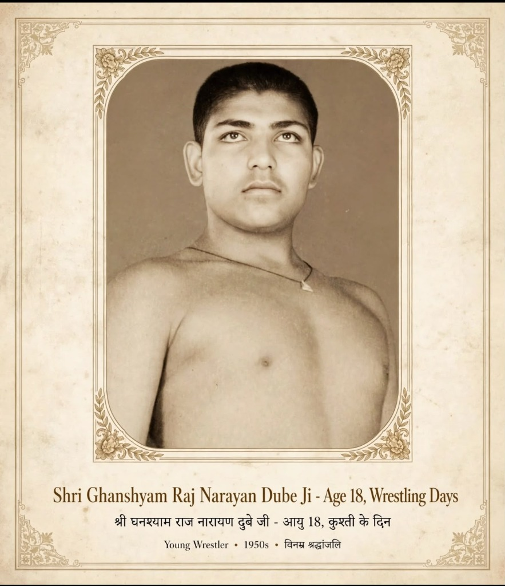
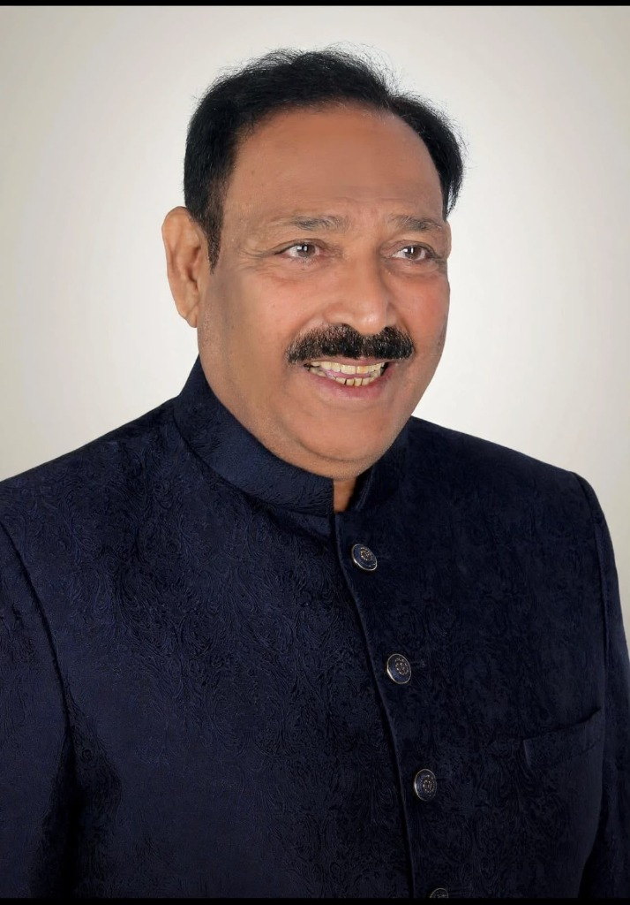
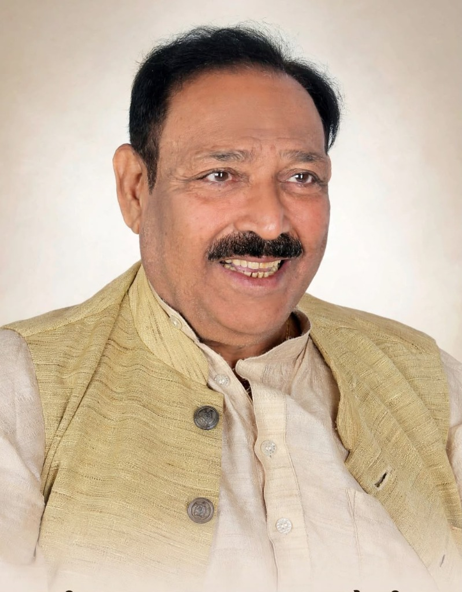

The Legacy of Shri Ghanshyam Raj Narayan Dube
10 November 1951 – 31 December 2024 • A Life of Courage, Public Service, Education & Institution-Building
From the wrestling arena of Maharashtra to the soil of Uttar Pradesh, devoted to people, institutions, and the belief that ordinary individuals could create extraordinary change.
The Beginning & Early Roots
Born on 10 November 1951 in Mumbai, Maharashtra, in a humble family and brought up in Mumbai, Shri Ghanshyam Raj Narayan Dube started working at an early age to support his family and people around him. That early struggle became his greatest strength, forging discipline, determination, courage, and an unbreakable connection to the ground.
While Mumbai was his janmabhoomi and early karmabhoomi, he never lost touch with the ground of Uttar Pradesh. Throughout his lifetime, he remained deeply rooted there among the people, constantly bridging the energy of India’s commercial capital with the rural heartland.
Achievement becomes a legacy when it creates opportunity for others.


From Kushti to Public Life
His early years were shaped by Kushti and the traditional wrestling culture of Maharashtra. As a young wrestler and Maharashtra Hind Kesari, he earned widespread renown for sporting prowess and physical discipline.
For him, sport was training for life. That uncompromising discipline propelled him into public service as a respected Member of the Maharashtra Legislative Council (Ex-MLC) and later as Block Pramukh in Uttar Pradesh.
In UP, he became the first pioneer to bring rural electrification and paved roads to his native villages of Kusuda and Suriyawan. With electricity and roads came transformative infrastructure: schools, colleges, cold storage facilities, and fuel stations, generating employment, economic self-reliance, and medical-educational support.

The Thinker, Spokesman & Human
Shri Ghanshyamji was much more than a wrestler or political representative. He was a powerful spokesman, an intellectual, spiritual, and deeply well-read thinker who spoke with remarkable authority on every subject, from constitutional law and civic planning to agricultural economics and Vedic philosophy.
Full of joy, humor, vitality, and unshakeable conviction, he was the kind of leader who could get anything accomplished at any hour through sheer personal warmth, integrity, and inspiring presence. That rare blend of strength and humility earned him universal love and respect across political party lines and social strata.
Education as Legacy
For him, educating a woman was strengthening the entire community.
Shri Ghanshyam Dubey Mahavidyalaya, Bhadohi, UP
His crowning institutional achievement is opening the doors of higher education to thousands of rural youth, especially young women. Established in 1988, Shri Ghanshyam Dubey Mahavidyalaya offers comprehensive degree programs including B.A., B.Com, B.Ed, M.A., B.Sc, and BCA, breaking generational cycles of rural poverty and educational disadvantage.
Mumbai gave him upbringing, character, the wrestling arena of Hind Kesari, legislative leadership, and early lifetime achievement.
Banaras, Suriyawan, and Kusuda gave him a field for Seva: to build, to electrify, to educate, to employ, and to empower.
The Journey
Milestones of courage, wrestling excellence, public dedication, and enduring national service.
The Four Pillars
The moral tenets inherited from Shri Ghanshyam Dube that guide the annual selection of GRD10 National Awards Achievers.
Courage
Standing unwaveringly in defense of public justice, championing the vulnerable against all odds.
Service
Placing community welfare and institutional uplift before personal comfort, wealth, or acclaim.
Integrity
Total alignment of moral compass across private convictions and public statesmanship.
Perseverance
The relentless stamina to carry nation-building institutions forward through decades of quiet labor.
GRD10: His Legacy Continues
GRD10 is not just an award in his memory. It is an enduring extension of his living values.
An initiative by Dr Sunita Dube with the Samuhik Prerna of his family, friends, and well-wishers • A Philanthropic Initiative of Aryan Medical & Educational Trust.